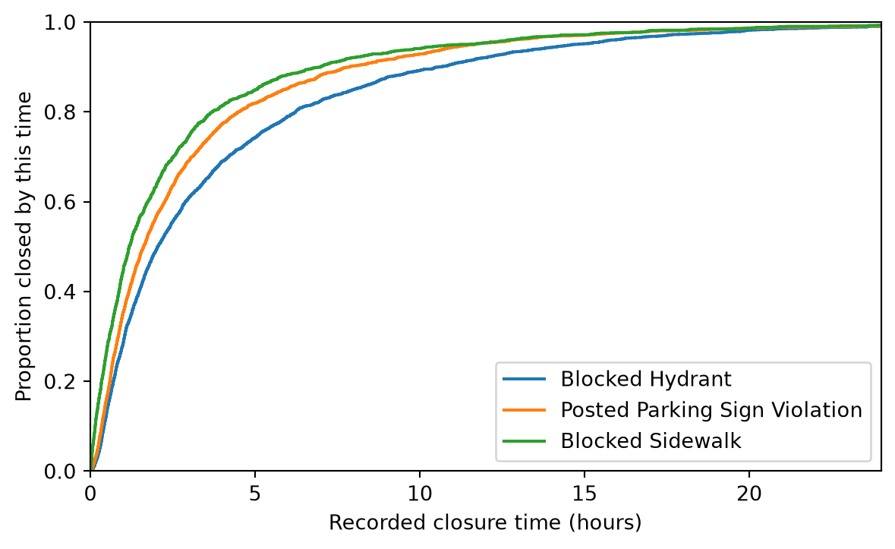

Exploratory data analysis (EDA) examines distributions, relationships, and irregularities before a final account of findings is written. Its purpose is to learn what the observed data can show, what they cannot show, and which questions deserve closer investigation (National Institute of Standards and Technology, n.d.). This chapter first states principles that apply across datasets and then develops them through a case study. The next chapter develops principles for choosing and evaluating visual displays across the data-science workflow; here, plots support investigation alongside numerical summaries and checks of the records.
7.1 Principles of Exploratory Data Analysis
Exploratory data analysis begins with questions about the variation in a prepared table rather than with a search for every possible plot. Preparation checks in Chapter 6 establish whether an identifier is unique or a join preserves rows; exploration uses the validated records to ask how an outcome is distributed, how groups differ, and which observations merit closer inspection. The same summary can serve both stages with a different purpose. For example, a count of missing coordinates diagnoses geographic coverage before mapping, while its variation by borough may become an exploratory question about which requests a map omits. Yu and Barter distinguish such question-guided exploration from diagnostic work during cleaning and from figures prepared to communicate selected findings (Yu & Barter, 2024). The distinction is analytical rather than technical: a histogram or table can appear in each stage, but its interpretation depends on the question, eligible records, and measurement established in the earlier chapters (Tussey & Yan, 2025).
Exploration requires comparable quantities before differences are interpreted. Center, spread, tails, missingness, and group size describe different features of a distribution, so a single mean cannot characterize a long right tail or a heterogeneous group. Comparisons across places or times also require compatible units and observation periods. A request count from two weekend days cannot be compared directly with a count from five weekdays as if the exposure time were equal, and an area income value copied onto many requests does not create independent area observations. Numerical summaries and plots should be selected for a stated question and checked against each other. A surprising observation can prompt source inspection, whereas a subgroup difference can motivate a revised question or a more suitable denominator. This cycle of question, calculation, inspection, and revision defines EDA more clearly than a preferred chart type (National Institute of Standards and Technology, n.d.; Yu & Barter, 2024).
Exploration must separate a description of the observed requests from a claim about a broader process. A table can summarize every record in its declared scope without a sampling model; a hypothesis test or interval adds assumptions about how other observations might arise. Those assumptions deserve particular scrutiny when groups, thresholds, or comparisons were chosen after inspecting the same records. A second source of uncertainty is the analyst’s judgment: a result may change under a plausible alternative time window, treatment of long closure intervals, or geographic grouping. Yu and Barter propose examining such stability as part of the evaluation of data-derived findings (Yu & Barter, 2024). Stability under selected changes does not repair undercoverage, uncertain measurement, or confounding, but it shows whether a reported pattern depends heavily on one decision. An exploratory report should therefore state both the assumptions of any inferential calculation and the reasonable analytical alternatives it has examined (Wasserstein & Lazar, 2016).
7.2 Case Study: Question and Eligible Records
The case study answers the working question in Chapter 5 using the screened requests prepared in Chapter 6. Its primary target is the distribution of recorded closure hours within each of the three most frequently reported problem-detail groups during September 6–12, 2026. The frequency rule determines group membership before closure-time summaries are examined; it does not make the groups random or comparable in all other respects. The analysis first describes the full closure-time distribution and then examines variation by detail, creation date, borough, and matched area. These views can reveal composition that a single citywide median would conceal. A permutation calculation and bootstrap interval later illustrate how an inferential model changes the question, while sensitivity checks test whether the descriptive contrast survives selected analytical alternatives. Throughout, the four formulation checks in Section 5.1 constrain the interpretation of the observed differences.
The initial scope report provides an audit of the table that enters this analysis rather than a second lesson in import and cleaning. The shared preparation function applies the documented time and problem filters, timestamp parsing, field names, and closure-time definition from Chapter 6. The report then verifies the number of request identifiers, missing or negative outcomes, and missing coordinates that affect later spatial comparisons. These checks establish the eligible set for the present figures; they do not resolve whether reporting behavior or agency practice differs across groups. The order of analysis is deliberate: inspect the overall distribution, apply the frequency-based group rule, examine time and place, and only then consider inferential and sensitivity calculations. This order makes it possible to distinguish a comparison specified by the working formulation from an additional pattern noticed during exploration.
The scope report supports the use of every screened request in the main closure-time comparison because identifiers are unique and the derived outcome is present and nonnegative. Missing coordinates do not justify excluding those requests from a nonspatial distribution, but they do limit the population represented by a later point map. Treating all missing fields as a reason for complete-case deletion would conflate these two eligibility rules. The table also describes a defined week of service requests rather than a random sample of all parking conditions. A precise summary of these records can therefore coexist with substantial uncertainty about unreported incidents or how another week would look. The analysis will keep the eligible set attached to each result and will interpret variation in closure time as a mixture of reporting and administrative processes unless stronger evidence separates them.
7.3 Closure-Time Distributions and Problem Details
The overall closure-time distribution establishes which summaries can represent a typical request and which features require separate attention. The median divides observed intervals into lower and upper halves, while a quantile identifies a specified fraction of intervals at or below its value. The mean reflects every recorded duration and is more sensitive to the long upper tail. Reporting these quantities together allows readers to distinguish a typical interval from delayed closures rather than reducing both to one number. The table below calculates summaries from every eligible closure interval. The accompanying histogram displays only the first 24 hours on its horizontal axis to make the dense part of the distribution legible. That visual limit is not a row exclusion from the table or subsequent comparisons; the caption and text must make the difference clear. A later sensitivity calculation explicitly applies a 24-hour row restriction and reports its effect.
Figure 7.1: Recorded closure times for eligible illegal-parking requests. The display stops at 24 hours; the numerical summary includes longer intervals.
The median closure interval is about 1.67 hours, while the mean is about 3.51 hours. The 90th percentile is about 8.73 hours, the 99th percentile is about 23.58 hours, and the maximum is nearly 200 hours. This right tail makes the mean substantially larger than the median. It also makes a statement such as “requests close in about two hours” incomplete: it describes a typical request but omits the upper tail. A large interval may be valid, a correction to a timestamp, or an operational exception; its presence alone does not establish an error. The next comparison therefore reports medians and quartiles alongside means.
The group rule implements the formulation without searching closure times for a favorable contrast. The code selects the three most frequent problem-detail labels among eligible requests and then calculates each group’s count, center, spread, and upper quantile. It retains the provider’s category values rather than combining labels that appear similar but may have different operational meanings. The rule is transparent and can be reapplied to a new extract, although a different week could have a different set of leading categories. The accompanying empirical cumulative distribution gives, at each closure time \(t\), the fraction of requests in a group with recorded closure time at most \(t\). This makes comparisons at specific time thresholds possible without assuming that the distributions share a common shape. Because the group rule and the analysis were developed using the observed week, later inferential calculations remain exploratory.
fig, ax = plt.subplots(figsize=(7, 4))for detail in top_details: durations = np.sort(top.loc[ top["problem_detail"].eq(detail), "closure_hours" ].to_numpy()) fractions = np.arange(1, len(durations) +1) /len(durations) ax.step(durations, fractions, where="post", label=detail)ax.set(xlabel="Recorded closure time (hours)", ylabel="Proportion closed by this time", xlim=(0, 24), ylim=(0, 1))ax.legend()plt.show()

Figure 7.2: Empirical cumulative distributions of closure time for the three most reported details. The horizontal axis stops at 24 hours.
Blocked Hydrant has the largest median of the three groups, about 2.05 hours, followed by Posted Parking Sign Violation at 1.62 hours and Blocked Sidewalk at 1.18 hours. The hydrant group’s median exceeds the sidewalk group’s by about 0.86 hours, or 52 minutes. Their distributions overlap substantially, so the difference in medians does not mean that every hydrant request took longer than every sidewalk request. The cumulative curves show the proportion closed by any time on the horizontal axis; they retain more distributional information than a comparison of three means. Neither the table nor the plot identifies why the groups differ.
7.4 Variation Across Time and Place
Temporal and geographic stratification examines whether a pooled group contrast combines different request mixes. Creation date identifies when a report entered the service system, whereas closure time is the subsequent elapsed interval; grouping by creation date does not assign a request to the date on which it closed. The first table reports the daily volume of eligible requests, so each row has a one-day observation period. The second table counts the three selected problem details by borough and shows whether their relative frequencies differ across places. These tables are descriptive checks on composition, not estimates of the frequency of illegal parking on the street. A difference in group mix can help explain why a citywide closure-time summary differs from a within-borough summary, but the tables alone do not establish the agency process that generated either pattern.
Recorded daily volume ranges from 1,563 on September 6 to 2,080 on September 10. The counts alone do not establish a weekday effect because they cover only one occurrence of each day of the week. The borough table shows that the mix of problem details also varies by place: Manhattan has more Posted Parking Sign Violation requests than Blocked Hydrant requests, whereas Brooklyn has the opposite ordering. Geographic composition can therefore affect the citywide comparison. A borough label still represents a broad area and cannot identify the practices of an individual precinct.
Area context raises a different exploratory question and changes the unit at which a comparison is valid. Section 6.5 explains the five-digit ZIP-label match to 2024 American Community Survey (ACS) estimates for ZIP Code Tabulation Areas (ZCTAs), including its geographic limitations (U.S. Census Bureau, 2023). This chapter reuses the checked lookup through attach_zcta_context() instead of repeating the preparation code. The resulting table still has one row per request, so an income estimate appears on every request whose ZIP label matches the same ZCTA. Those copies do not constitute independent observations of area income. The comparison below first aggregates closure time to one row per matched ZCTA, records the number of requests supporting each area median, and then groups areas by estimated income. Its target is variation among area summaries, not the relationship between a reporter’s income and that reporter’s closure time.
The join matches 13,033 of 13,040 requests. Among areas with at least 20 requests and a reported median household income, 149 ZCTAs enter the grouped comparison. Their median closure times differ across income quartiles, but the ordering is not monotone: the lower-middle quartile has a higher median of area medians than the lowest or upper-middle quartile. The minimum count of 20 is a transparent stability rule, not a guarantee of accurate area estimates. The ACS income values describe an earlier period and have sampling uncertainty; the request-to-ZCTA match also has geographic limits (U.S. Census Bureau, 2026). This table supports a question about area-level association, not a conclusion about residents’ incomes or an income effect on individual requests.
7.5 Assessing Uncertainty and Robustness
A hypothesis test can be part of EDA when its assumptions and limited purpose are explicit. Consider the median closure-time difference between Blocked Hydrant and Blocked Sidewalk requests. For the observed week, that difference is descriptive and needs no test. A test addresses a different question: under a model in which requests from the two detail groups have exchangeable closure-time distributions, how unusual would the observed difference be? The permutation calculation below pools the two groups and reallocates their labels while preserving their sizes. Its two-sided statistic is the absolute difference between medians. A bootstrap interval separately resamples requests within each group to show variability under an independent-request model.
The observed median gap is about 0.865 hours, and the bootstrap interval is approximately 0.712 to 1.016 hours. The estimated permutation \(p\)-value is about 0.0005, with the added one in the numerator and denominator preventing a reported zero from a finite set of permutations. These results show that the observed separation is large relative to these relabelings and resamples. They do not establish that the detail label causes a closure-time difference. Requests may be related through place, time, repeat reporting, or agency practice, and the analysis was chosen after inspection of this week. The bootstrap interval does not include uncertainty from coverage, measurement, or group selection. A \(p\)-value should not be read as the probability that the null hypothesis is true or as a measure of practical importance (Wasserstein & Lazar, 2016).
Sensitivity analysis quantifies how much a descriptive result changes under defensible alternatives to the primary calculation. Yu and Barter emphasize that choices made during cleaning, preprocessing, and analysis can affect a reported finding (Yu & Barter, 2024). The first check below restricts closure intervals to at most 24 hours to assess the influence of the long upper tail; it does not classify longer intervals as invalid. The remaining checks calculate the same hydrant-minus-sidewalk median gap within each borough, holding the outcome definition and group labels fixed while changing geographic composition. These are targeted perturbations of the eligible set rather than an exhaustive search for a desired result. The table reports group sizes alongside gaps because a large contrast based on few requests deserves a different interpretation from a similar contrast based on many. Neither sensitivity check removes confounding or extends the conclusion beyond the observed week.
The all-request median gap is about 0.865 hours and changes little, to about 0.848 hours, after intervals above 24 hours are excluded. The geographic comparisons are less uniform: the gap is about 1.07 hours in Brooklyn and 1.09 hours in Queens, but only 0.10 hours in the Bronx and approximately zero in Manhattan. Staten Island has a larger gap, but its comparison uses only 54 hydrant and 34 sidewalk requests. Group sizes and possible differences in case mix or processing limit the interpretation of these contrasts. The pooled result therefore does not describe every borough equally well.
Exploration has answered the initial descriptive question for the recorded week: closure-time distributions differ among the three most reported details, with a long right tail and the largest median among Blocked Hydrant requests. It has also identified conditions for a more focused next analysis. A future question could compare those details within borough and creation-time strata across multiple weeks, while documenting changes in request volume and closure practices. A causal question about why closure times differ would require a design that addresses confounding and the meaning of the recorded outcome. The ZCTA analysis similarly motivates area-level questions but does not turn area income into a request-level explanation. EDA makes observed patterns and the limits of their interpretation explicit enough to guide that next question.
Exercises
These exercises use the distributed request archive and, where indicated, data/zcta_context.csv. Report the record counts behind each summary, state units and exclusions, and distinguish descriptive findings from claims about processes outside the observed week.
7.1 Examine whether long-closure requests vary by the hour when a request was created. Define a request as long-closure when its closure time is at least two hours; exclude requests without a usable closure time and report their number.
Divide creation hours into four six-hour intervals and state their boundaries. Construct a contingency table of interval by long-closure status, showing both counts and within-interval proportions. Include the eligible request count for each interval.
Repeat the table for the three most frequent problem details. Identify one contrast that changes across intervals and compare its group sizes.
Compare the binary outcome with the continuous closure-time summaries. Explain why either table alone cannot distinguish a time-of-day pattern from changes in location, reporting behavior, or case mix.
7.2 Revisit the ZCTA comparison under alternative inclusion rules.
Construct one row per matched ZCTA with request count, median closure time, and ACS median household income. Report missing income values and explain why the area, rather than the request, is the observational unit here.
Compare the quartile summary using minimum request counts of 10, 20, and 40 per ZCTA. State how many areas and requests enter each version.
Assess whether the direction of the area-level association is stable. Describe at least two limitations of a postal ZIP to ZCTA string match.
7.3 Evaluate a proposed claim that hydrant requests generally take longer to close than sidewalk requests.
Reproduce the observed median difference, bootstrap interval, and permutation calculation using a documented random seed.
Repeat the median comparison within each borough with at least 50 requests of each detail. Report the eligible group counts.
Write a conclusion that separates the observed week’s pattern, inference under the resampling assumptions, and the unsupported causal claim.
Tussey, D., & Yan, J. (2025). Principles for open data curation: A case study with the new york city 311 service request data. https://doi.org/10.48550/arXiv.2502.08649
Wasserstein, R. L., & Lazar, N. A. (2016). The ASA statement on \(p\)-values: Context, process, and purpose. The American Statistician, 70(2), 129–133. https://doi.org/10.1080/00031305.2016.1154108
Yu, B., & Barter, R. L. (2024). Veridical data science: The practice of responsible data analysis and decision making. The MIT Press. https://vdsbook.com/